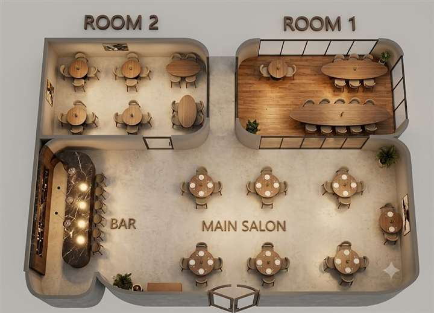

Persisch
Mirza Ghasemi
Auberginen, Tomaten, Knoblauch, Ei und Brot.
Büren-Brenken · Sendstraße 5
Deutsche Klassiker, persische Spezialitäten, Pizza, Pasta und Drinks in einer warmen Gasthof-Atmosphäre.
Die neue Startseite fuehrt Besucher direkt zum Restaurant: Stimmung, Speisekarte, Oeffnungszeiten und Tischanfrage. Die Ferienwohnung hat jetzt eine eigene Seite, damit beide Geschaeftsbereiche klarer wirken.
Der Video-Hintergrund ist im Demo nur als Platzhalter gedacht. Spaeter kann hier ein echtes kurzes Video aus der Kueche laufen, zum Beispiel ein Hauptgericht ueber Feuer oder auf dem Grill.
Aus der Küche
Eine kurze Auswahl fuer die Startseite. Die volle Speisekarte hat jetzt eine eigene Seite.
Auberginen, Tomaten, Knoblauch, Ei und Brot.

Orientalischer Reis, Rinderkebab, Tomaten und Salat.

Bratkartoffeln, Zwiebeln, Speck, Eier und Salat.

Spinat, Zwiebeln, Tomaten, Feta und Knoblauch.
Reservierungsidee
Diese Karte ist noch nicht zu 100 Prozent genau, zeigt aber sehr gut die Richtung: Gäste wählen einen Tischbereich, Zeitraum und senden danach eine Anfrage.

Spaeter erweiterbar
Für die echte Version brauchen wir später den finalen Grundriss, Tischnummern, Sitzplätze und Reservierungsregeln. Für die Familienpräsentation zeigt diese Ansicht schon sehr gut die Idee.
Mit Tischwunsch anfragenÖffnungszeiten